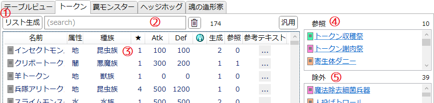
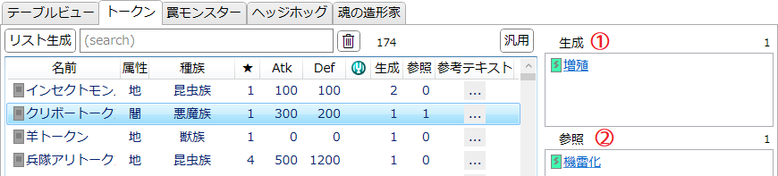

「トークン」タブ
モンスタートークンを調べるためのタブです。
説明

-
リスト生成
- このタブは初期状態では何も表示されていません。
- 「リスト生成」ボタンを押すと、データベースに存在するカード全てのテキストを調べ、トークンの一覧を生成します。
- 正規表現によってカードテキストから機械的にトークンの情報を読み取るため、誤って解釈された情報が存在する可能性があります。
-
サーチバー
-
テキストボックスに入力してEnterを押すとテキスト検索を適用します。
- トークン名と参考テキストの内容から検索します。
- 公式データベースではカードテキストにはルビ(読みがな)が振られないため、トークン名の「読み」による検索はできません。ご注意ください。
-
 : 絞り込みを解除します。
: 絞り込みを解除します。
- サーチバーの右端には、現在そのリストに表示されている項目の数が表示されます。
-
テキストボックスに入力してEnterを押すとテキスト検索を適用します。
-
トークンリスト
- 名前のついたトークンが一覧されます。
- 項目を選ぶと右のリストにその内容が表示されます(後述)。
- Shiftキーを押しながら項目をクリックすると、山括弧《》で囲ったカード名がクリップボードにコピーされます。
-
チューナーにはチューナーアイコン
 が表示されます。
が表示されます。
- 「参考テキスト」の...にマウスカーソルを乗せると、そのトークンを生成するカードのうち最もIDが若いカードのテキストが表示されます。
-
ヘッダー(「名前」などが書かれている部分)をクリックすると、それを基準として項目をソート(並べ替え)します。
- ソートを解除(初期の並び順にソート)したい場合は「参考テキスト」のヘッダーをクリックしてください。
- カードリスト1
-
カードリスト2
- カード名のリンクをクリックすると、そのカードのカード情報を別ウィンドウとして開きます。
- Shiftキーを押しながら項目をクリックすると、山括弧《》で囲ったカード名がクリップボードにコピーされます。
-
「リスト生成」を行った直後には、各リストには以下のカードが一覧されます。
-
「参照」: 名前を指定せずトークンを参照するカード(以下具体例)
- 〈トークン*祭〉(トークンを破壊したりリリースしたりする効果)
- 〈幻獣機〉モンスター (自分フィールドにトークンが存在する限り自身は破壊されない)
- 《白闘気双頭神龍》(自分フィールドにトークンが無い場合を効果の条件とする)
-
「除外」: 召喚条件や効果対象などに「トークン以外」または「トークンを除く」と書かれているカード(以下具体例)
- 〈魔鍵〉カード (トークン以外の通常モンスターを指定する)
- 一部リンクモンスター (トークン以外をリンク素材に要求する)
- 《エスケープ・ゴート》(トークン以外をリリースしてトークンを生成する)
-
「参照」: 名前を指定せずトークンを参照するカード(以下具体例)
- サーチバー右の「汎用」ボタンを押すと、これらリストの内容は上記の状態に戻ります。
-
トークンリストからトークンを選ぶと、これらリストの内容は以下のように変化します。

- 「生成」: そのトークンを特殊召喚する効果を持つカード
- 「参照」: そのトークンを特殊召喚する以外の目的で指定する効果を持つカード